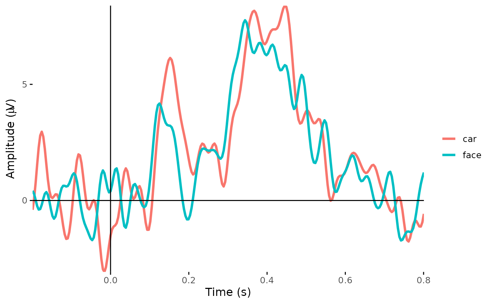
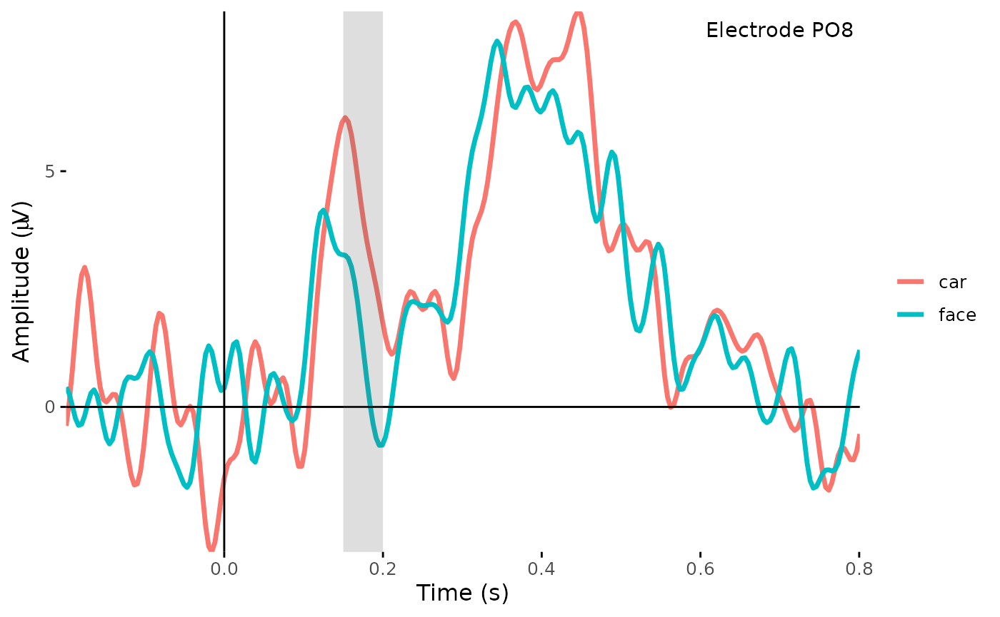
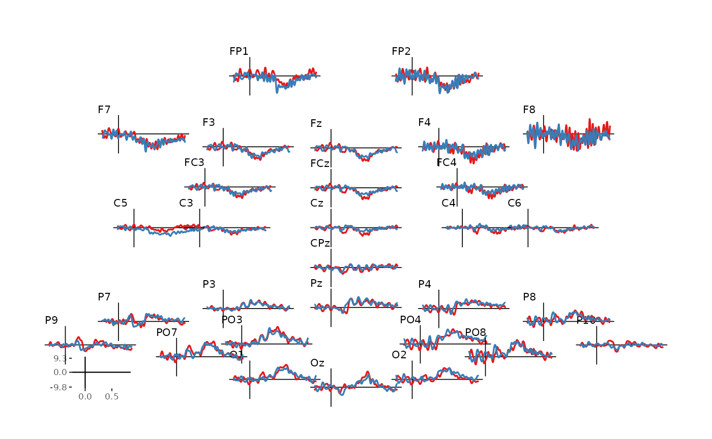
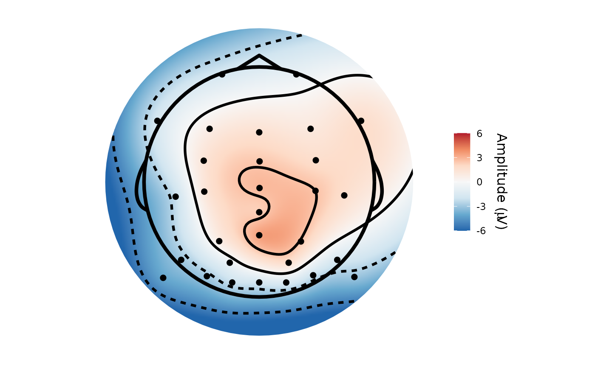

🎯 GOALS
Visualizing ERP effects using time course plots and scalp topography plots.
8.1 Time course
-
Load required packages:
ggplot2for plottingdplyrandtidyrfor data wrangling
- Load preprocessed epochs from a single ERP CORE participant:
bids_dir <- here("data/n170")
deriv_dir <- here(bids_dir, "derivatives/eegUtils/sub-001/eeg")
epoch_file <- here(deriv_dir, "sub-001_task-N170_desc-corrected_eeg.rds")
dat_epo <- readRDS(epoch_file)-
Create a time course plot:
x-axis: Time
y-axis: ERP amplitude (one electrode or ROI average)
Colors: Average ERP wave forms in different conditions
plot_timecourse(dat_epo, electrode = "PO7", colour = "epoch_labels")
- Add annotations for the plotted time window and electrode of interest:
tmin <- 0.15
tmax <- 0.2
plot_timecourse(dat_epo, electrode = "PO7", colour = "epoch_labels") +
annotate("rect", xmin = tmin, xmax = tmax, ymin = -Inf, ymax = Inf, alpha = 0.2) +
annotate("text", x = 0.7, y = 8, label = "Electrode PO8")
- Plot all electrodes:
erp_scalp(dat_epo, colour = "epoch_labels", size = 0.6)
8.2 Scalp topography
Scalp topography shows the distribution of voltages on the scalp
Either for a single condition or (more typically) for the difference between conditions
-
Requires some wrangling of the data:
Goal: a data frame with a column of electrode names and a vector of amplitudes
Using tidyverse style here (see the note in Vignette 1, Section 1.4)
dat_epo %>%
as.data.frame() %>%
filter(time >= tmin & time < tmax) %>%
select(-c(time, epoch, participant_id, recording, event_type)) %>%
pivot_longer(-epoch_labels, names_to = "electrode", values_to = "amplitude") %>%
group_by(electrode, epoch_labels) %>%
summarize(amplitude = mean(amplitude), .groups = "drop") %>%
group_split(epoch_labels) -> dats_topo
head(dats_topo[[1]])## # A tibble: 6 × 3
## electrode epoch_labels amplitude
## <chr> <chr> <dbl>
## 1 C3 car -1.00
## 2 C4 car -2.18
## 3 C5 car 0.291
## 4 C6 car -1.73
## 5 CPz car -2.23
## 6 Cz car -2.21
head(dats_topo[[2]])## # A tibble: 6 × 3
## electrode epoch_labels amplitude
## <chr> <chr> <dbl>
## 1 C3 face 0.0955
## 2 C4 face 0.417
## 3 C5 face -1.86
## 4 C6 face -0.0356
## 5 CPz face 0.0628
## 6 Cz face 0.615- Create a new data frame that has the difference between face amplitudes and car amplitudes:
dat_topo <- data.frame(
electrode = dats_topo[[1]]$electrode,
amplitude = dats_topo[[2]]$amplitude - dats_topo[[1]]$amplitude
)
head(dat_topo)## electrode amplitude
## 1 C3 1.099734
## 2 C4 2.595016
## 3 C5 -2.147613
## 4 C6 1.692896
## 5 CPz 2.290653
## 6 Cz 2.822351- Create the topographic plot with
eegUtils:
